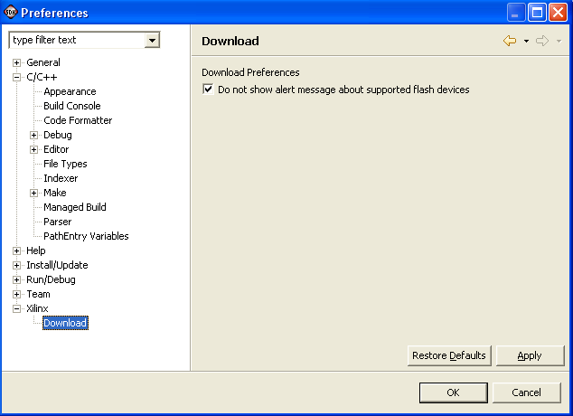

Building applications in SDK
You can customize the appearance of the Xilinx dialogs in the Preferences dialog box. Select Window > Preferences to open it, and click Xilinx in the preference page list.

In the Xilinx page of the Preferences dialog box, you can set your download preferences. When the Do not show alert message about supported Flash devices check box is selected, SDK disables the alert message about supported Flash devices during Flash programming.

Defining build settings
Building
Copyright © 1995-2009 Xilinx, Inc. All rights reserved.